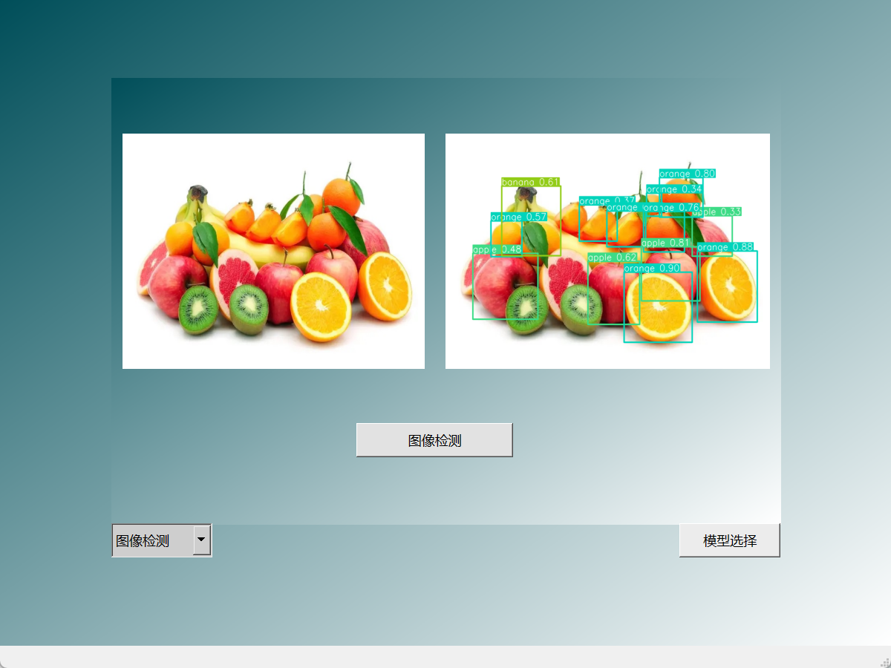
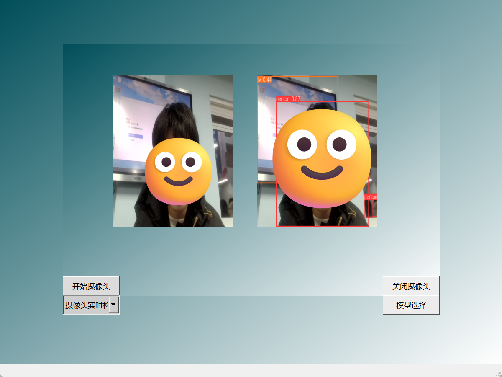
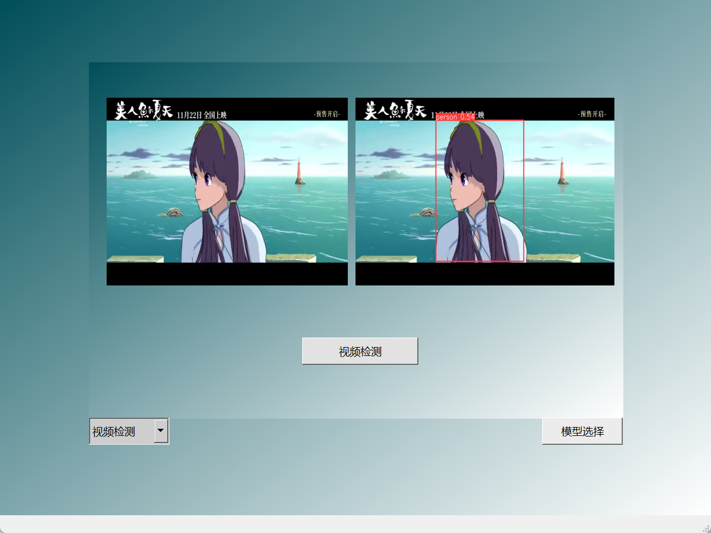
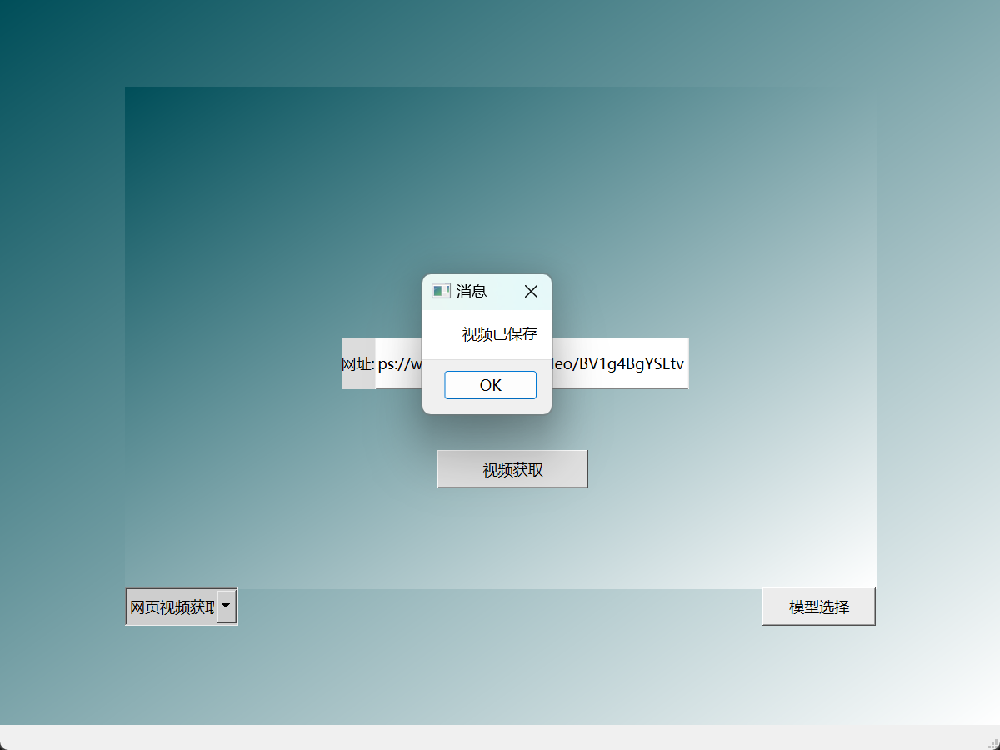
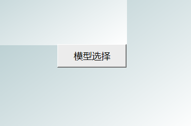
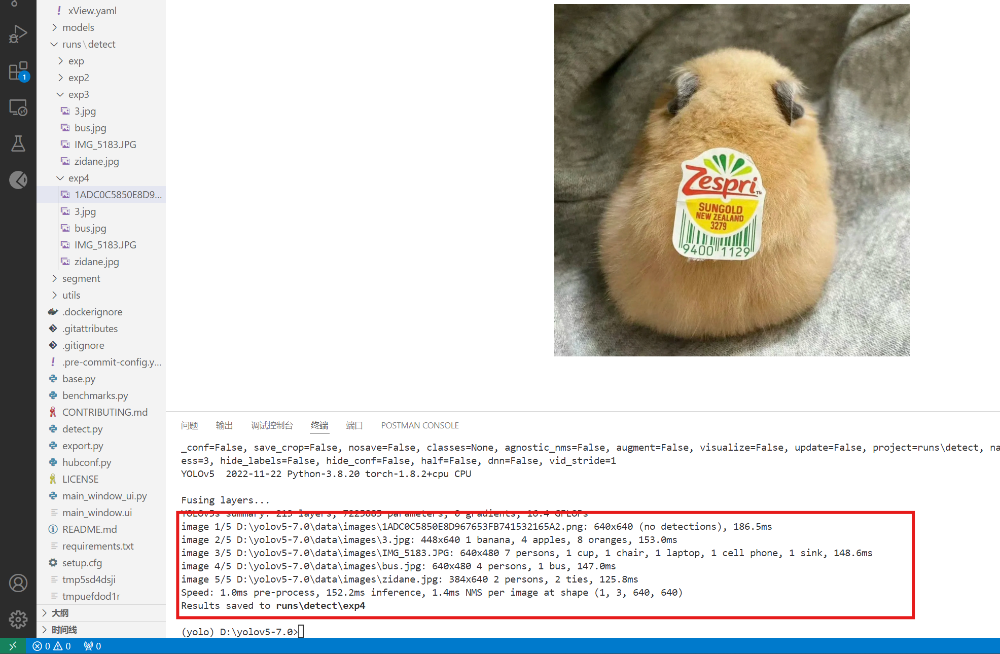

🖼️ 图像检测功能
- display_detect_image()：选择并显示原始图像
- detect_image()：模型推理与结果可视化
- 支持 JPG/PNG 格式

🎥 实时摄像头检测
- open/close_camera()：设备控制
- show_camera_img()：实时推理
- 20ms 低延迟处理

📹 视频处理功能
- video_choose()：本地视频选择
- 30fps 逐帧检测
- 支持 MP4/AVI 格式

🌐 网页视频获取
- get_bilibili_video()：B站视频下载
- 自动解析视频信息
- 本地存储管理

📦 模型管理
- choose_detect_model()：动态加载权重
- 支持多种 YOLOv5 变体
- 模型热切换功能

📊 检测分析
- plot_detect_information()：统计可视化
- 目标分类计数
- 实时数据更新
